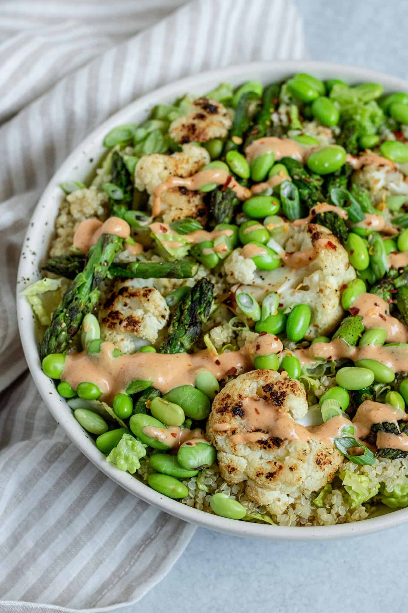

Veggie Bowl

This veggie bowl is a recipe from plant based rd. Every single recipe of hers is amazing!
I have been making her recipes for over a year and every time it hits the spot!
PlantBasedRd Link
Ingredients
SRIRACHA GINGER SAUCE
- 3 tbsp tahini
- Juice of 1/2 medium lemon
- 2 tsp maple syrup
- 4 tbsp or more water to thin out
- Seasonings
SALAD BOWL
- 1 tbsp olive oil
- 2 cup small cauliflower florets
- 1/2 cup asparagus, cut into 2 inch pieces
- 1 cup cooked quinoa
- 2 cups edamame, thawed
- 4 cups romaine lettuce
- In a sauté pan, heat up your oil and add the cauliflower florets.
- Cover pan with a lid and allow to sear over medium low heat for 2-3 minutes to brown, then flip and cook on the other side. Add asparagus and cover again to sear for another 2 minutes.
- Remove lid, add garlic and a pinch of salt and pepper and sauté for another 3-5 minutes, checking to see the tenderness of the cauliflower. Then remove pan from heat.
- To assemble your bowl, serve yourself romaine, quinoa and top with cauliflower, asparagus and your thawed edamame.
- Pour your sauce overtop and sprinkle with some scallions and extra salt and pepper to taste.